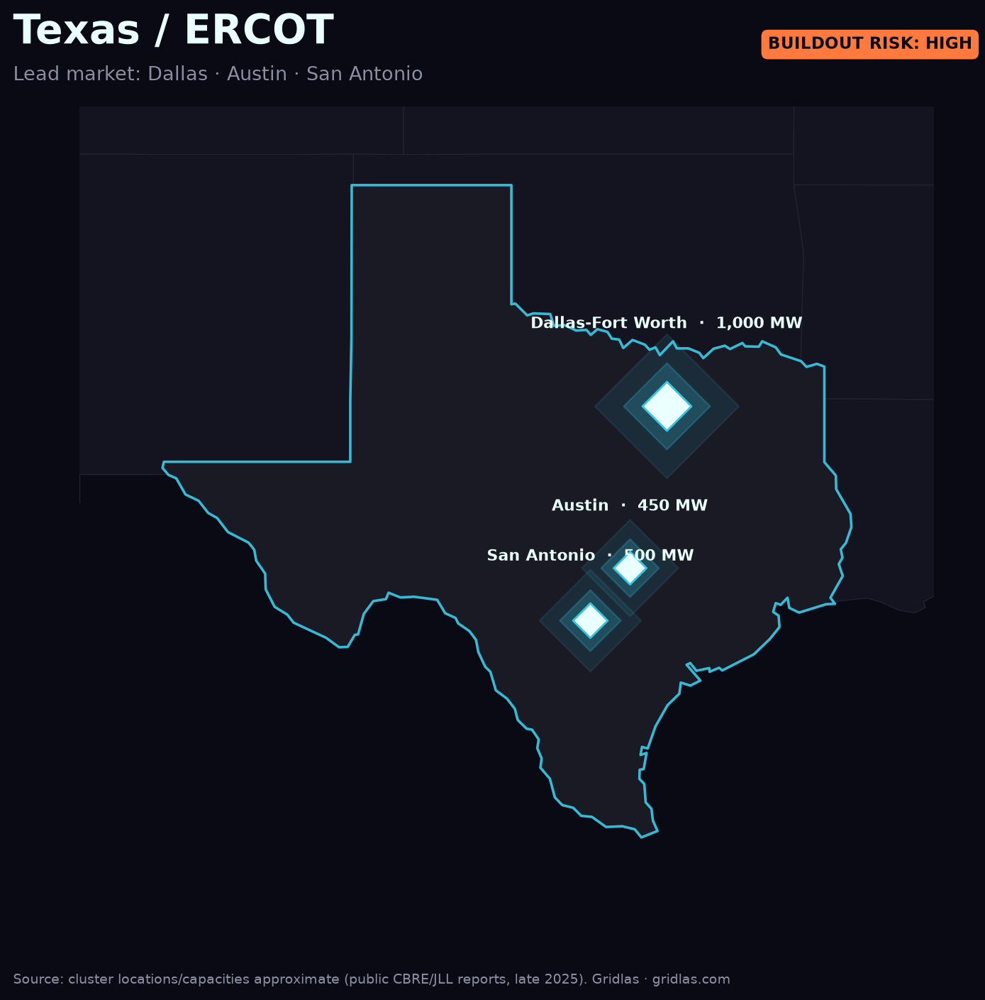
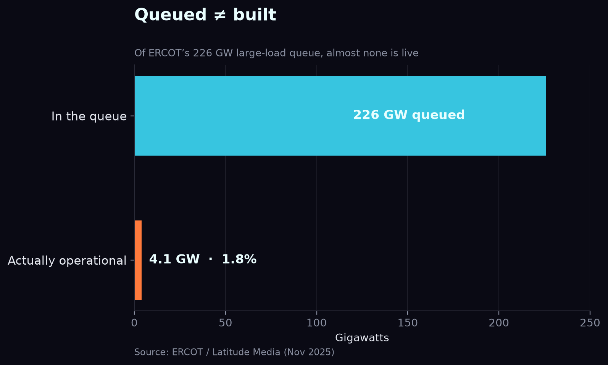

Home / Data centers by region / Texas (ERCOT)
No market shows the AI power crunch like Texas — where the interconnection queue is the real bottleneck, not the silicon.
ERCOT's large-load interconnection queue went from 63 GW at the end of 2024 to roughly 226 GW by November 2025 — about a 4× jump in a single year. Around 77% of that is data centers aiming to connect by 2030. Dallas–Fort Worth alone has crossed a gigawatt of operating supply.

But a queue is a wish list, not a build plan. Of that 226 GW, only about 1.8% is actually operational and drawing power — and more than half of the requested capacity hasn't submitted enough information to even begin study. ERCOT added roughly 23 GW of new generation in 2024–25, but the requests are arriving far faster than steel goes in the ground.

ERCOT's deregulated, fast-connect reputation is exactly why hyperscalers flooded in — and exactly why the queue is now the gating factor. For anyone siting capacity in Texas, the question has shifted from "can I get land and power?" to "where in the queue am I, and will the wires arrive before my GPUs do?"
Go deeper. The Gridlas report includes the full Texas deep-dive, high-res ERCOT queue maps, and the underlying dataset (CSV/GeoJSON) — built from public ERCOT, LBNL & EIA data.
Get the report →Prefer the free 3-page summary first? The 8 findings and the chart that explains the AI power crunch — straight to your inbox.
No spam. Unsubscribe anytime.
It grew from 63 GW to about 226 GW between end-2024 and Nov 2025, and roughly 77% of the queue is data centers.
Only about 1.8% of queued capacity is operational — compute scales in months, power in years.
Try the free power & water estimator on this market → · Share on X →
Big-picture overview: The Texas power rush →